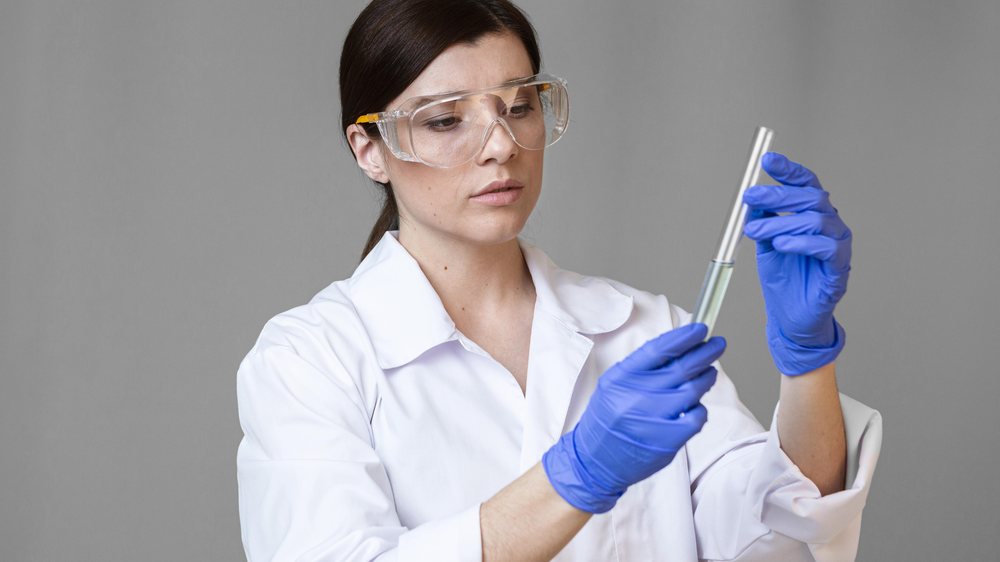

Специалист Продуктово Развитие в "GreenGlow" – Еко-Козметика
Описание на Позицията:
GreenGlow е иновативна и бързо развиваща се компания, специализирана в производството на естествена и еко-съобразна козметика. В момента търсим креативен и мотивиран Специалист Продуктово Развитие, който да ни помогне да разширим нашата линия от висококачествени, естествени продукти за красота.

Основни Задължения:
- Развитие и формулиране на нови естествени козметични продукти.
- Извършване на пазарни проучвания за идентифициране на нови тенденции в областта на естествената козметика.
- Сътрудничество с отделите за маркетинг и продажби за оптимизиране на продуктовите стратегии.
- Управление на процесите по тестване на продуктите и осигуряване на тяхното съответствие със стандартите за качество и безопасност.
Изисквания:
- Поне 2 години опит в областта на разработката на козметични продукти.
- Степен в химия, биохимия, козметология или сродна област.
- Страст към екологията и устойчивостта.
- Отлични умения за комуникация и работа в екип.
- Творчески подход и умение за иновации.